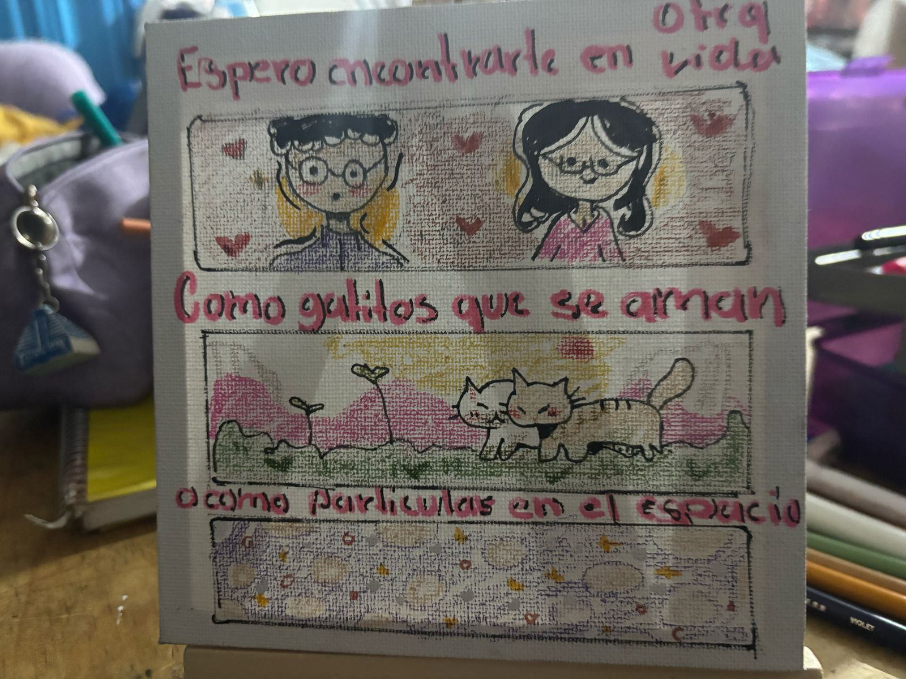
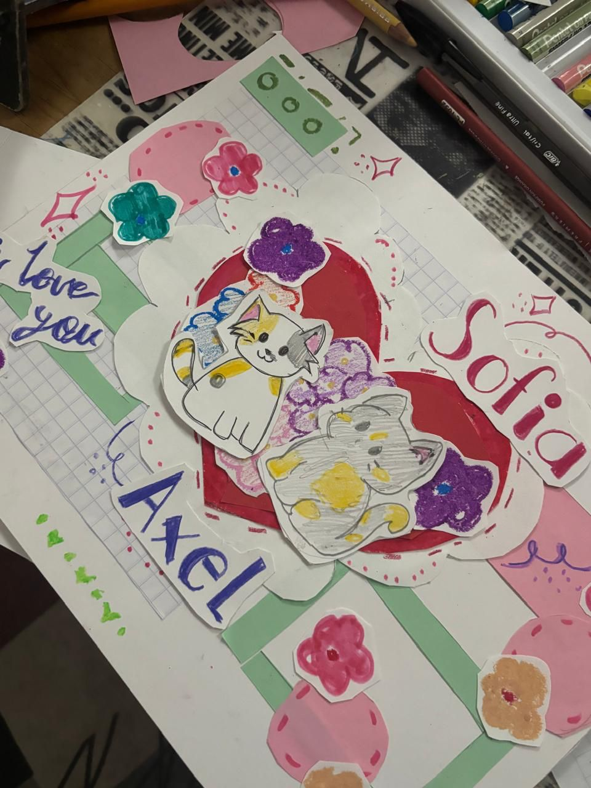
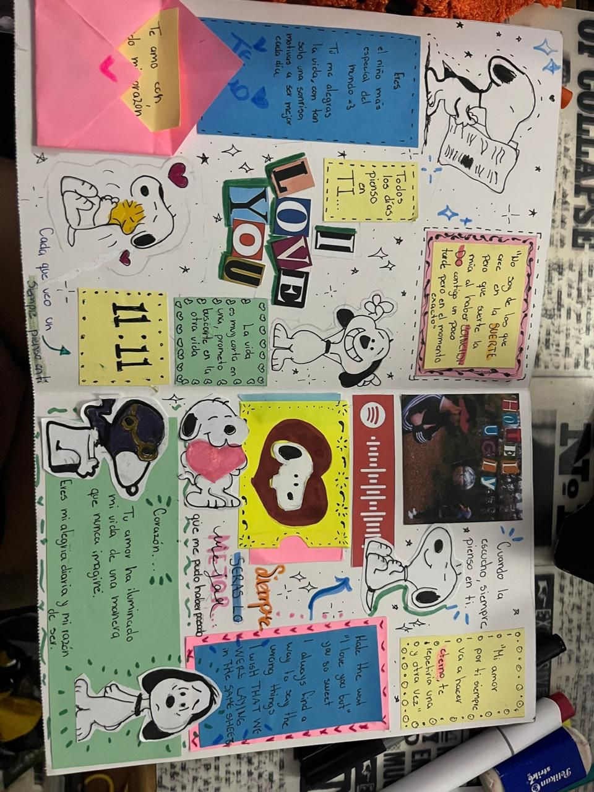
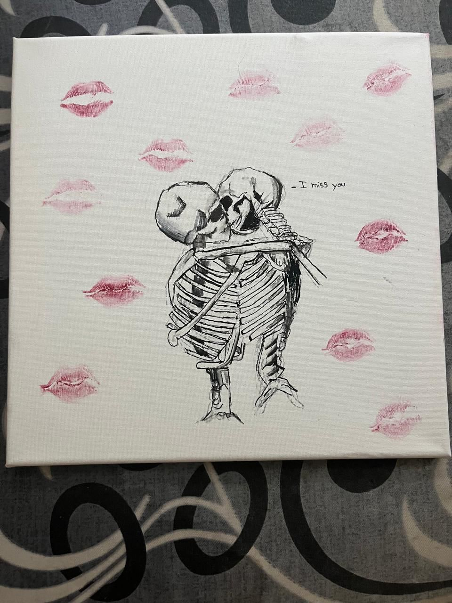
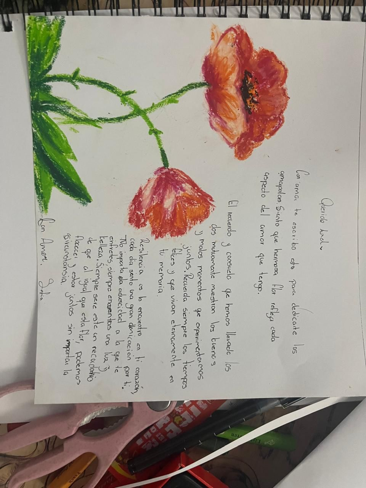
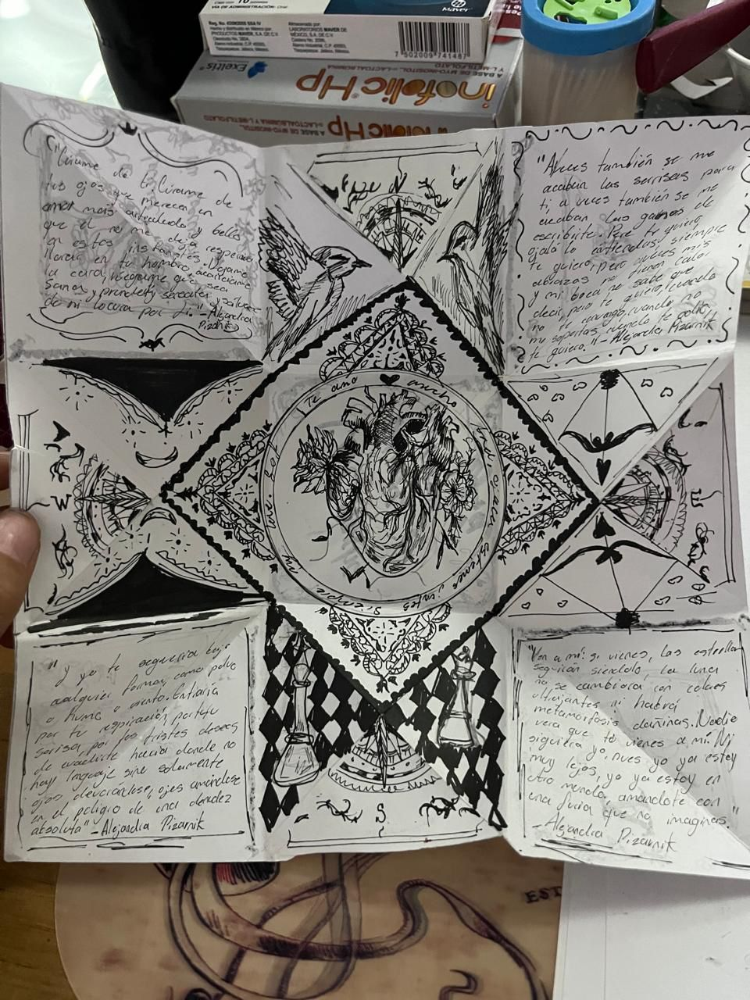

¿Que Somos?
Somos un espacio donde el amor, la nostalgia, la amistad y los sueños encuentran su forma en papel.
Nos dedicamos a crear cartas artesanales, hechas a mano, pensadas para dedicar, regalar o simplemente atesorar. Cada carta es una pequeña obra de arte: llena de detalles, ilustraciones, palabras cuidadosamente elegidas y la intención de tocar corazones.
¿Quieres una carta?
Puedes elegir entre nuestras cartas ya hechas, cada una con su propia historia, o pedir una completamente personalizada: tú nos compartes lo que quieres decir, y nosotros lo transformamos en una carta que hable por ti.
Una vez que hagas tu pedido, te enviaremos un correo con la confirmación y un ticket en PDF.
Después, seguimos el proceso contigo por correo, para asegurarnos de que cada palabra, cada dibujo y cada detalle te representen completamente.
Todo está hecho a mano, con tiempo, cariño y muchísima atención, porque sabemos que no estás regalando solo una carta, estás regalando un pedacito de ti.💌
¿Para que hacemos esto?
Porque hay cosas que no se pueden decir por mensaje.
Porque a veces sentimos tanto que no sabemos cómo ponerlo en palabras, y una carta puede ser ese puente.
Hacemos esto porque creemos en los gestos que se guardan, en los recuerdos que se pueden tocar, y en el poder de lo íntimo, lo artesanal, lo que se entrega con el corazón.
No hacemos cartas por hacerlas. Las hacemos porque cada una puede convertirse en una pausa, un abrazo, una cicatriz que empieza a sanar, una confesión que por fin encuentra voz.
Hacemos cartas porque creemos que lo pequeño también puede ser eterno.
💋🌈

"Encuentro de Estrellas"
Esta carta cuenta una historia sin necesidad
de muchas palabras: dos almas destinadas a
encontrarse, como cometas que cruzan el
cielo o como partículas bailando en el
espacio. Con ilustraciones llenas de ternura,
cada trazo es un suspiro, cada color, un
pequeño universo. Ideal para regalar a quien
hace que el mundo gire más despacio y el
amor se sienta inevitable.

"Jardin de Caricias"
Entre corazones entrelazados, flores que
brillan y dulces gatitos dibujados a mano, esta
carta es un poema visual para quienes creen
en la magia del amor sencillo y verdadero. Un
regalo personalizado que late al ritmo de dos
nombres, unidos como un jardín secreto que
florece en papel.

"Suspiros de Amor"
Un universo de amor y alegría vive en cada
pliegue de esta carta. Con la ternura eterna
de Snoopy y palabras que abrazan el corazón,
esta creación combina colores vibrantes,
pequeños secretos guardados en sobres y
mensajes que susurran ‘Te amo’ en dos
idiomas. Perfecta para regalar un pedacito
de felicidad en cualquier momento del año.

“Amor eterno”
Dos esqueletos sellan un abrazo que
trasciende el tiempo, rodeados de besos
suspendidos en el aire. Esta carta es una
promesa: la de un amor que ni la muerte
puede apagar. Una pieza melancólica y
apasionada, ideal para almas románticas que
encuentran belleza en lo eterno y lo imposible.

“Jardín de memorias”
Una carta que florece en cada palabra.
Pétalos de colores vibrantes enmarcan un
mensaje íntimo y esperanzador, como un
susurro al oído de alguien amado.
Hecha con la calidez de un abrazo y el suspiro de la
distancia, es un refugio para quienes creen
que el amor puede brotar incluso en los
rincones más tristes.

“Santuario de tinta y susurros”
Una carta que se despliega como un antiguo
hechizo: en cada pliegue, versos que acarician
y heridas que sanan. Dibujos detallados como
sueños entrelazados, pájaros, corazones,
símbolos secretos… todo resguardado en un
relicario de nostalgia y ternura. Es un fragmento de alma atrapado en papel,
perfecto para quien ama la belleza cruda de
las emociones.